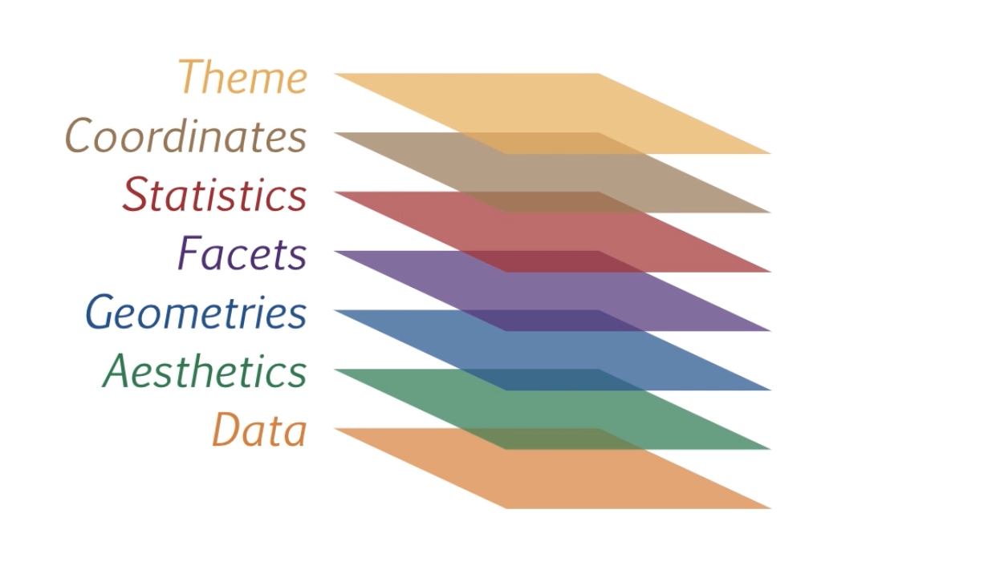
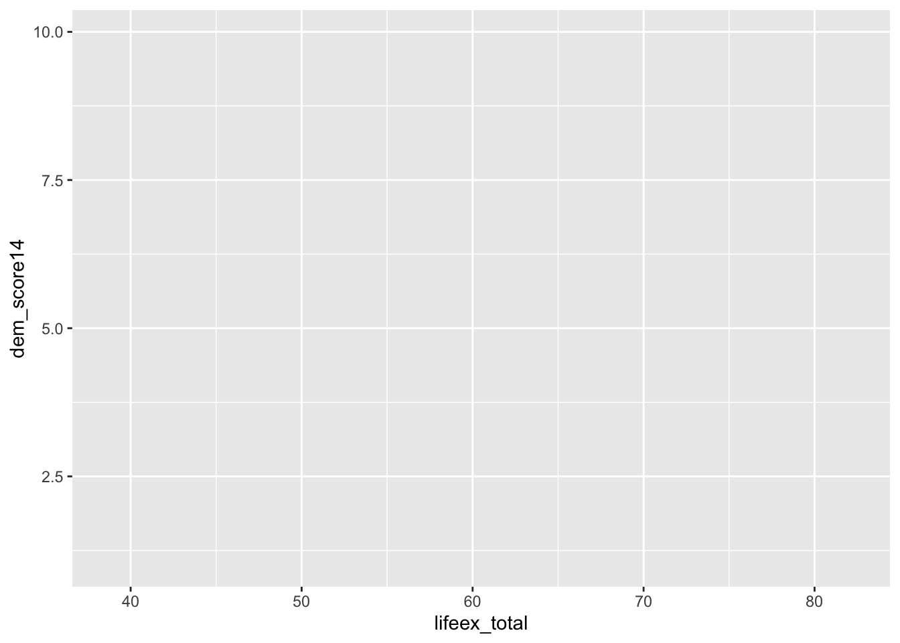
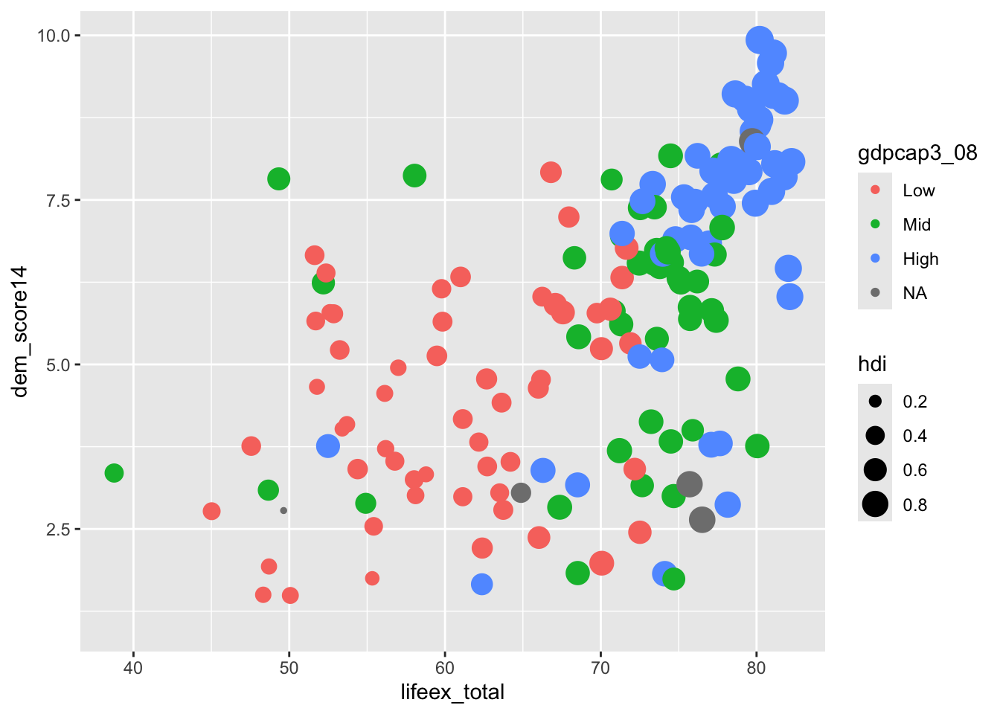
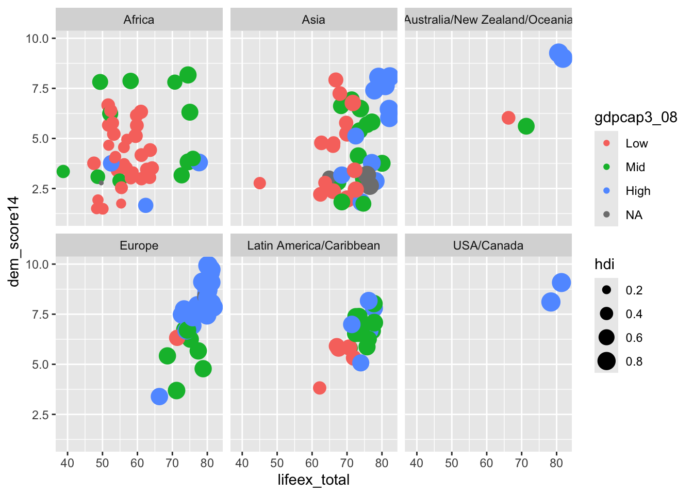
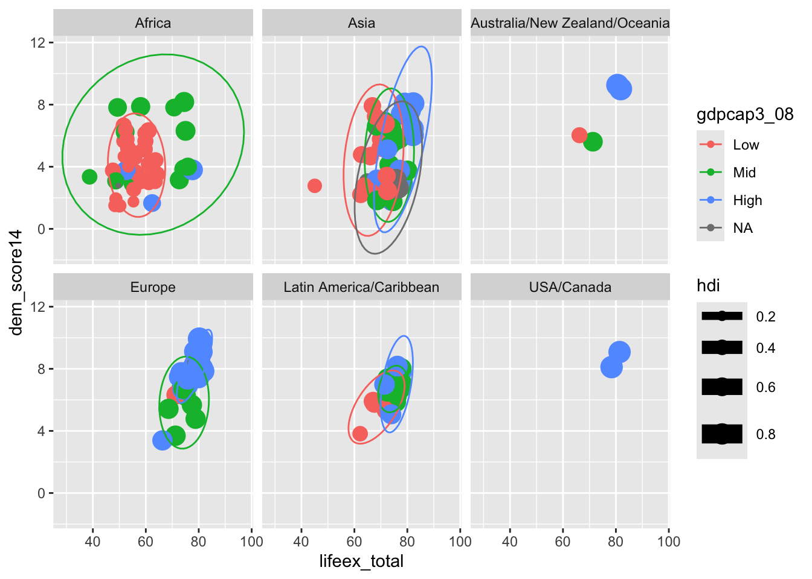
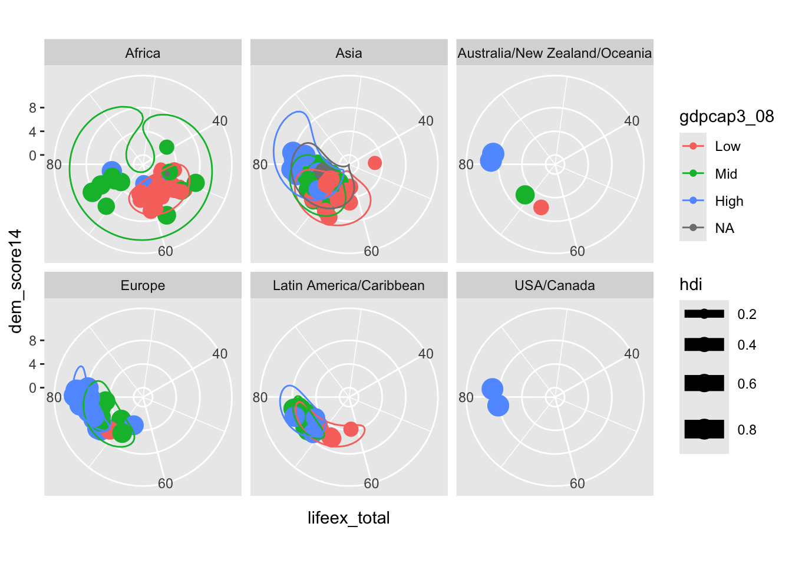

Como se puede ver en el vídeo, la mejor manera de pensar en la gramática de los gráficos es a partir de una estructura de capas superpuestas. La idea es muy sencilla: cada gráfico se construye a partir de una serie de capas que se van sumando una a una, de modo que uno puede ir añadiendo mayor sofisticación y complejidad en la medida que ya tiene resueltos los temas anteriores.
Cada capa de un gráfico es un componente independiente que se puede modificar y combinar con otras capas para crear un gráfico más complejo. La figura abajo nos brinda una representación visual de la gramática de los gráficos:

En la base se encuentra la capa de datos. Cualquier visualización depende fundamentalmente de la información que se desea comunicar. Esta capa condiciona todo lo que viene después: las geometrías que podemos emplear, las estadísticas, la capacidad de dividir en diferentes grupos, etc.
Imaginemos nuestra base de datos w con los datos de los países. Queremos crear un diagrama de dispersión para analizar la relación entre la esperanza de vida (lifeex_total) y el nivel de democracia (dem_score14). imaginemos que queremos contrastar esas dos variables con el IDH (hdi) y el nivel del PIB per cápita (gdpcap3_08). Nuestro gráfico solo se importará con esas variables y ninguna más, pues no las emplearemos.
Code
# Carga los datoslibrary(poliscidata)# Crea una base w a partir# de la original worldw <- world# Visualiza el nombre del país,# la esperanza de vida y el nivel# de democraciareactable(w[, c("country", "lifeex_total", "dem_score14","hdi","gdpcap3_08")])
Esta sería nuestra capa de datos. Tenemos cinco variables, dos en formato texto (factor) y dos numéricas: el nombre del país, la esperanza de vida, el nivel de democracia, el IDH y la desigualdad de género. Para crearla formalmente en R, debemos decir que la base de datos que vamos a emplear es la que se llama w en la función ggplot del paquete ggplot2.
Code
# Carga el paquetelibrary(ggplot2)# Crea la capa de datos g <-ggplot(w)
Este procedimiento crea un nuevo objeto llamado g (g de gráfico, pero podría ser cualquier otro nombre) que contiene solamente la indicación de que w es la capa de datos.
La siguiente capa es la de estética. En esta capa se definen las variables que se van a visualizar y cómo. También se refieren a ese nivel como el “mapeo” de las variables. En nuestro caso, queremos visualizar la esperanza de vida en el eje x y el nivel de democracia en el eje y. Ya tenemos para un gráfico de dispersión (scatterplot).
No obstante, también queremos que el tamaño de cada punto sea proporcional al IDH, siendo que los países con mayor desarrollo humano tendrán puntos más grandes y los de menos, más pequeños. Aprovechamos para definir que el color de los puntos corresponda al valor del nivel del PIB per cápita (Bajo, Mediano, Alto).
Para crear la capa de estética en R, sería tan sencillo como “sumar” la definición de la estética a la capa de datos:
Code
# Añade una capa de estética# para la relación entre la esperanza# de vida y el nivel de democracia# con el IDH establecido como tamaño # y el PIB per cápita como colorg <- g +aes(x=lifeex_total,y=dem_score14,size=hdi,color=gdpcap3_08)# visualiza el gráficog

“¡Pero no veo nada más que el fondo y los ejes!” Claro que no. Estás en el backstage todavía. Solo dijiste al R que querías visualizar la esperanza de vida en el eje x, el nivel de democracia en el eje y, el tamaño de los puntos proporcional al IDH y el color de los puntos proporcional a la desigualdad de género. Pero no le dijiste cómo querías visualizarlo. Para ello necesitas definir que tipo de representación visual quieres: pueden ser puntos, líneas, barras, florecitas, avioncitos… ¿Cómo el R va a adivinar lo que Ud.? Eso es lo que viene a continuación.
Añadiremos una capa de geometría, representada por la función geom_ seguida del tipo de geometría que queremos. En nuestro caso, queremos puntos, por lo que usaremos la función geom_point.
Code
# Añade la capa de geometría# que serán los puntosg <- g +geom_point()# Visualiza el gráficog

Ahora sí, ¡habemus gráfico! Hemos sumado a geometría de puntos a las capas anteriores de datos y estética. Pero, nos resultó un gráfico que da miedo (ya lidiaremos con eso más tarde).
Muchos pararían aquí, pero desperdiciaríamos la oportunidad de hacer un gráfico más informativo. Todavía podemos añadir más capas y cambios a nuestra visualización para que sea más bonita e eficaz.
Imaginemos que nos gustaría separar los países según regiones. Para ello, necesitamos una nueva capa: la capa de facetas. En esta capa, se definen las variables que se van a utilizar para separar los datos en diferentes paneles. En nuestro caso, queremos separar los países por regiones.
Para ello, empleamos la función facet_wrap y le decimos que queremos dividir los países por la variable regionun. La capa de facetas se vería así:
Code
# Añade la capa de facetas para# dividir el gráfico por regionesg <- g +facet_wrap(~regionun)# Visualiza el gráficog

Como habéis visto, he ido añadiendo capas al gráfico y él estaba de lo más contento. Ahora quiero añadir alguna estadística chula que me permita visualizar mejor los resultados, como una elipse que circule los puntos de cada grupo de PIB per cápita. Lo hago por medio de una capa de estadística:
Code
# Añado la capa de estadísticag <- g +stat_ellipse()# visualizo el gráficog

Ya tengo muchos decorados. Ahora toca cambiar un poco la representación jugando con la capa de coordenadas.
Code
# Cambia las coordenadas# a polaresg <- g +coord_polar()# Visualiza el gráficog

¿Demasiado liado para ti? Para mi también. Mi experimento no ha sido muy exitoso. No hay problema, volvemos al tipo de coordenadas anterior:
Code
# Superpone las coordenadas # cartesianas a las anterioresg <- g +coord_cartesian()# Visualiza el gráficog
Esto nos advierte también que la estructura de capas no resulta obligatoria. Las únicas capas que son estrictamente necesarias son la de datos, estética y geometría. Las demás son opcionales y pueden ser añadidas o quitadas según la necesidad.
Ahora nos toca mejorar la apariencia del gráfico. Para ello, añadiemos una capa de tema. En esta capa, se definen los elementos que se van a utilizar para mejorar la apariencia del gráfico. Necesitamos quitar ese fondo feo, cambiar los colores, añadir un título, cambiar el nombre de los ejes, etc. Hagamoslo:
Code
# Añadimos un tema pre programado# para quitar elementos indesejablesg <- g +theme_classic()# Cambiamos el colorg <- g +scale_color_manual(values=c("red3","orange","blue"))# Añadimos un título y cambiamos# los nombres de los ejesg <- g +labs(title="Relación entre esperanza de vida y nivel de democracia",x="Esperanza de vida",y="Nivel de democracia")# Cambiamos el título de las# leyendasg <- g +guides(color =guide_legend(title="PIB per cápita"),size =guide_legend(title="IDH") )# Aumentamos el tamaño del títulog <- g +theme(plot.title =element_text(size=16, face="bold")) # Visualizamos el gráficog